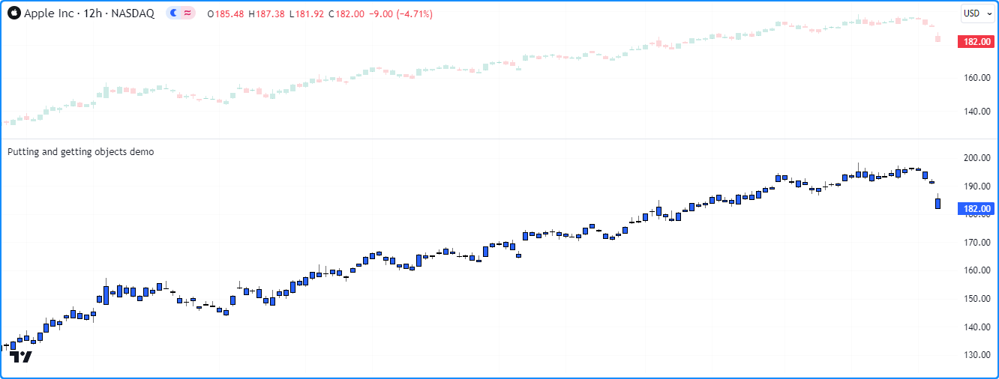

Maps¶
Note
This page contains advanced material. If you are a beginning Pine Script® programmer, we recommend you become familiar with other, more accessible Pine Script® features before you venture here.
Introduction¶
Pine Script® Maps are collections that store elements in key-value pairs. They allow scripts to collect multiple value references associated with unique identifiers (keys).
Unlike arrays and matrices, maps are considered unordered collections. Scripts quickly access a map’s values by referencing the keys from the key-value pairs put into them rather than traversing an internal index.
A map’s keys can be of any fundamental type, and its values can be of any built-in or user-defined type. Maps cannot directly use other collections (maps, arrays, or matrices) as values, but they can hold UDT instances containing these data structures within their fields. See this section for more information.
As with other collections, maps can contain up to 100,000 elements in total. Since each key-value pair in a map consists of two elements (a unique key and its associated value), the maximum number of key-value pairs a map can hold is 50,000.
Declaring a map¶
Pine Script® uses the following syntax to declare maps:
[var/varip ][map<keyType, valueType> ]<identifier> = <expression>
Where <keyType, valueType> is the map’s type template that declares
the types of keys and values it will contain, and the <expression> returns either a map instance or na.
When declaring a map variable assigned to na, users must include the
map keyword followed by a
type template to tell the compiler that the variable can accept
maps with keyType keys and valueType values.
For example, this line of code declares a new myMap variable that can accept map instances holding pairs of
string keys and
float values:
map<string, float> myMap = na
When the <expression> is not na, the compiler does not require explicit type declaration,
as it will infer the type information from the assigned map object.
This line declares a myMap variable assigned to an empty map with
string keys and
float values.
Any maps assigned to this variable later must have the same key and value types:
myMap = map.new<string, float>()
Using `var` and `varip` keywords¶
Users can include the var or varip keywords to instruct their scripts to declare map variables only on the first chart bar. Variables that use these keywords point to the same map instances on each script iteration until explicitly reassigned.
For example, this script declares a colorMap variable assigned to a map that holds pairs of
string keys and
color values on the first chart bar.
The script displays an oscillator on the chart and uses the values it
put into the colorMap on the first bar
to color the plots on all bars:
//@version=5
indicator("var map demo")
//@variable A map associating color values with string keys.
var colorMap = map.new<string, color>()
// Put `<string, color>` pairs into `colorMap` on the first bar.
if bar_index == 0
colorMap.put("Bull", color.green)
colorMap.put("Bear", color.red)
colorMap.put("Neutral", color.gray)
//@variable The 14-bar RSI of `close`.
float oscillator = ta.rsi(close, 14)
//@variable The color of the `oscillator`.
color oscColor = switch
oscillator > 50 => colorMap.get("Bull")
oscillator < 50 => colorMap.get("Bear")
=> colorMap.get("Neutral")
// Plot the `oscillator` using the `oscColor` from our `colorMap`.
plot(oscillator, "Histogram", oscColor, 2, plot.style_histogram, histbase = 50)
plot(oscillator, "Line", oscColor, 3)
Note
Map variables declared using varip behave as ones using var on historical data, but they update their key-value pairs for realtime bars (i.e., the bars since the script’s last compilation) on each new price tick. Maps assigned to varip variables can only hold values of int, float, bool, color, or string types or user-defined types that exclusively contain within their fields these types or collections (arrays, matrices, or maps) of these types.
Reading and writing¶
Putting and getting key-value pairs¶
The map.put() function is one that map users
will utilize quite often, as it’s the primary method to put a new key-value pair into a map. It associates the key
argument with the value argument in the call and adds the pair to the map id.
If the key argument in the map.put() call
already exists in the map’s keys, the new pair
passed into the function will replace the existing one.
To retrieve the value from a map id associated with a given key, use
map.get(). This function returns the value
if the id map contains the key.
Otherwise, it returns na.
The following example calculates the difference between the
bar_index values from when
close was last
rising and
falling over a given length
with the help of map.put()
and map.get() methods. The script puts a
("Rising", bar_index) pair into the data map when the price is rising and puts a ("Falling", bar_index)
pair into the map when the price is falling. It then puts a pair containing the “Difference” between the “Rising” and “Falling”
values into the map and plots its value on the chart:
//@version=5
indicator("Putting and getting demo")
//@variable The length of the `ta.rising()` and `ta.falling()` calculation.
int length = input.int(2, "Length")
//@variable A map associating `string` keys with `int` values.
var data = map.new<string, int>()
// Put a new ("Rising", `bar_index`) pair into the `data` map when `close` is rising.
if ta.rising(close, length)
data.put("Rising", bar_index)
// Put a new ("Falling", `bar_index`) pair into the `data` map when `close` is falling.
if ta.falling(close, length)
data.put("Falling", bar_index)
// Put the "Difference" between current "Rising" and "Falling" values into the `data` map.
data.put("Difference", data.get("Rising") - data.get("Falling"))
//@variable The difference between the last "Rising" and "Falling" `bar_index`.
int index = data.get("Difference")
//@variable Returns `color.green` when `index` is positive, `color.red` when negative, and `color.gray` otherwise.
color indexColor = index > 0 ? color.green : index < 0 ? color.red : color.gray
plot(index, color = indexColor, style = plot.style_columns)
- Note that:
- This script replaces the values associated with the “Rising”, “Falling”, and “Difference” keys on successive
data.put() calls, as each of these keys
is unique and can only appear once in the
datamap. - Replacing the pairs in a map does not change the internal insertion order of its keys. We discuss this further in the next section.
- This script replaces the values associated with the “Rising”, “Falling”, and “Difference” keys on successive
data.put() calls, as each of these keys
is unique and can only appear once in the
Similar to working with other collections, when putting a value of a special type
(line,
linefill,
label,
box, or
table) or a
user-defined type into a map, it’s important to note the inserted pair’s
value points to that same object without copying it. Modifying the value referenced by a key-value pair will
also affect the original object.
For example, this script contains a custom ChartData type with o, h, l, and c fields.
On the first chart bar, the script declares a myMap variable and adds the pair ("A", myData), where
myData is a ChartData instance with initial field values of na. It adds the pair ("B", myData)
to myMap and updates the object from this pair on every bar via the user-defined update() method.
Each change to the object with the “B” key affects the one referenced by the “A” key, as shown by the candle plot of the “A” object’s fields:
//@version=5
indicator("Putting and getting objects demo")
//@type A custom type to hold OHLC data.
type ChartData
float o
float h
float l
float c
//@function Updates the fields of a `ChartData` object.
method update(ChartData this) =>
this.o := open
this.h := high
this.l := low
this.c := close
//@variable A new `ChartData` instance declared on the first bar.
var myData = ChartData.new()
//@variable A map associating `string` keys with `ChartData` instances.
var myMap = map.new<string, ChartData>()
// Put a new pair with the "A" key into `myMap` only on the first bar.
if bar_index == 0
myMap.put("A", myData)
// Put a pair with the "B" key into `myMap` on every bar.
myMap.put("B", myData)
//@variable The `ChartData` value associated with the "A" key in `myMap`.
ChartData oldest = myMap.get("A")
//@variable The `ChartData` value associated with the "B" key in `myMap`.
ChartData newest = myMap.get("B")
// Update `newest`. Also affects `oldest` and `myData` since they all reference the same `ChartData` object.
newest.update()
// Plot the fields of `oldest` as candles.
plotcandle(oldest.o, oldest.h, oldest.l, oldest.c)
- Note that:
- This script would behave differently if it passed a copy of
myDatainto each myMap.put() call. For more information, see this section of our User Manual’s page on objects.
- This script would behave differently if it passed a copy of
Inspecting keys and values¶
`map.keys()` and `map.values()`¶
To retrieve all keys and values put into a map, use
map.keys() and
map.values().
These functions copy all key/value references within a map id to a new
array object.
Modifying the array returned from either of these functions does not affect the id map.
Although maps are unordered collections, Pine Script® internally maintains the insertion order
of a map’s key-value pairs. As a result, the
map.keys() and
map.values() functions always return
arrays with their elements ordered based on the id map’s insertion order.
The script below demonstrates this by displaying the key and value arrays from an m map in a
label once every 50 bars. As we see on the chart,
the order of elements in each array returned by m.keys() and m.values() aligns with the insertion order of
the key-value pairs in m:
//@version=5
indicator("Keys and values demo")
if bar_index % 50 == 0
//@variable A map containing pairs of `string` keys and `float` values.
m = map.new<string, float>()
// Put pairs into `m`. The map will maintain this insertion order.
m.put("First", math.round(math.random(0, 100)))
m.put("Second", m.get("First") + 1)
m.put("Third", m.get("Second") + 1)
//@variable An array containing the keys of `m` in their insertion order.
array<string> keys = m.keys()
//@variable An array containing the values of `m` in their insertion order.
array<float> values = m.values()
//@variable A label displaying the `size` of `m` and the `keys` and `values` arrays.
label debugLabel = label.new(
bar_index, 0,
str.format("Pairs: {0}\nKeys: {1}\nValues: {2}", m.size(), keys, values),
color = color.navy, style = label.style_label_center,
textcolor = color.white, size = size.huge
)
- Note that:
- The value with the “First” key is a random whole number between 0 and 100. The “Second” value is one greater than the “First”, and the “Third” value is one greater than the “Second”.
It’s important to note a map’s internal insertion order does not change when replacing its key-value pairs. The locations of the new elements in the keys() and values() arrays will be the same as the old elements in such cases. The only exception is if the script completely removes the key beforehand.
Below, we’ve added a line of code to put a new
value with the “Second” key into the m map, overwriting the previous value associated with that key. Although the
script puts this new pair into the map after the one with the “Third” key, the pair’s key and value are still second
in the keys and values arrays since the key was already present in m before the change:
//@version=5
indicator("Keys and values demo")
if bar_index % 50 == 0
//@variable A map containing pairs of `string` keys and `float` values.
m = map.new<string, float>()
// Put pairs into `m`. The map will maintain this insertion order.
m.put("First", math.round(math.random(0, 100)))
m.put("Second", m.get("First") + 1)
m.put("Third", m.get("Second") + 1)
// Overwrite the "Second" pair in `m`. This will NOT affect the insertion order.
// The key and value will still appear second in the `keys` and `values` arrays.
m.put("Second", -2)
//@variable An array containing the keys of `m` in their insertion order.
array<string> keys = m.keys()
//@variable An array containing the values of `m` in their insertion order.
array<float> values = m.values()
//@variable A label displaying the `size` of `m` and the `keys` and `values` arrays.
label debugLabel = label.new(
bar_index, 0,
str.format("Pairs: {0}\nKeys: {1}\nValues: {2}", m.size(), keys, values),
color = color.navy, style = label.style_label_center,
textcolor = color.white, size = size.huge
)
Note
The elements in a map.values()
array point to the same values as the map id. Consequently, when the map’s values are of reference types,
including line,
linefill,
label,
box,
table, or
UDTs, modifying the instances
referenced by the map.values()
array will also affect those referenced by the map id since the contents of both collections point to identical objects.
`map.contains()`¶
To check if a specific key exists within a map id, use
map.contains().
This function is a convenient alternative to calling
array.includes() on the
array returned from
map.keys().
For example, this script checks if various keys exist within an m map,
then displays the results in a label:
//@version=5
indicator("Inspecting keys demo")
//@variable A map containing `string` keys and `string` values.
m = map.new<string, string>()
// Put key-value pairs into the map.
m.put("A", "B")
m.put("C", "D")
m.put("E", "F")
//@variable An array of keys to check for in `m`.
array<string> testKeys = array.from("A", "B", "C", "D", "E", "F")
//@variable An array containing all elements from `testKeys` found in the keys of `m`.
array<string> mappedKeys = array.new<string>()
for key in testKeys
// Add the `key` to `mappedKeys` if `m` contains it.
if m.contains(key)
mappedKeys.push(key)
//@variable A string representing the `testKeys` array and the elements found within the keys of `m`.
string testText = str.format("Tested keys: {0}\nKeys found: {1}", testKeys, mappedKeys)
if bar_index == last_bar_index - 1
//@variable Displays the `testText` in a label at the `bar_index` before the last.
label debugLabel = label.new(
bar_index, 0, testText, style = label.style_label_center,
textcolor = color.white, size = size.huge
)
Removing key-value pairs¶
To remove a specific key-value pair from a map id, use
map.remove().
This function removes the key and its associated value from the map while preserving the insertion
order of other key-value pairs. It returns the removed value if the map
contained the key.
Otherwise, it returns na.
To remove all key-value pairs from a map id at once, use
map.clear().
The following script creates a new m map, puts
key-value pairs into the map, uses m.remove()
within a loop to remove each valid key listed in the removeKeys array, then calls
m.clear() to remove all remaining key-value pairs.
It uses a custom debugLabel() method to display the
size,
keys, and
values of m after each change:
//@version=5
indicator("Removing key-value pairs demo")
//@function Returns a label to display the keys and values from a map.
method debugLabel(
map<string, int> this, int barIndex = bar_index,
color bgColor = color.blue, string note = ""
) =>
//@variable A string representing the size, keys, and values in `this` map.
string repr = str.format(
"{0}\nSize: {1}\nKeys: {2}\nValues: {3}",
note, this.size(), str.tostring(this.keys()), str.tostring(this.values())
)
label.new(
barIndex, 0, repr, color = bgColor, style = label.style_label_center,
textcolor = color.white, size = size.huge
)
if bar_index == last_bar_index - 1
//@variable A map containing `string` keys and `int` values.
m = map.new<string, int>()
// Put key-value pairs into `m`.
for [i, key] in array.from("A", "B", "C", "D", "E")
m.put(key, i)
m.debugLabel(bar_index, color.green, "Added pairs")
//@variable An array of keys to remove from `m`.
array<string> removeKeys = array.from("B", "B", "D", "F", "a")
// Remove each `key` in `removeKeys` from `m`.
for key in removeKeys
m.remove(key)
m.debugLabel(bar_index + 10, color.red, "Removed pairs")
// Remove all remaining keys from `m`.
m.clear()
m.debugLabel(bar_index + 20, color.purple, "Cleared the map")
- Note that:
- Not all strings in the
removeKeysarray were present in the keys ofm. Attempting to remove non-existent keys (“F”, “a”, and the second “B” in this example) has no effect on a map’s contents.
- Not all strings in the
Combining maps¶
Scripts can combine two maps via map.put_all().
This function puts all key-value pairs from the id2 map, in their insertion order, into the id1 map.
As with map.put(), if any keys in id2
are also present in id1, this function replaces the key-value pairs that contain those keys without
affecting their initial insertion order.
This example contains a user-defined hexMap() function that maps decimal
int keys to
string representations of their
hexadecimal forms. The script uses this function to create two maps,
mapA and mapB, then uses mapA.put_all(mapB)
to put all key-value pairs from mapB into mapA.
The script uses a custom debugLabel() function to display labels showing the
keys and
values of mapA and mapB,
then another label displaying the contents of mapA after putting all key-value pairs from mapB into it:
//@version=5
indicator("Combining maps demo", "Hex map")
//@variable An array of string hex digits.
var array<string> hexDigits = str.split("0123456789ABCDEF", "")
//@function Returns a hexadecimal string for the specified `value`.
hex(int value) =>
//@variable A string representing the hex form of the `value`.
string result = ""
//@variable A temporary value for digit calculation.
int tempValue = value
while tempValue > 0
//@variable The next integer digit.
int digit = tempValue % 16
// Add the hex form of the `digit` to the `result`.
result := hexDigits.get(digit) + result
// Divide the `tempValue` by the base.
tempValue := int(tempValue / 16)
result
//@function Returns a map holding the `numbers` as keys and their `hex` strings as values.
hexMap(array<int> numbers) =>
//@variable A map associating `int` keys with `string` values.
result = map.new<int, string>()
for number in numbers
// Put a pair containing the `number` and its `hex()` representation into the `result`.
result.put(number, hex(number))
result
//@function Returns a label to display the keys and values of a hex map.
debugLabel(
map<int, string> this, int barIndex = bar_index, color bgColor = color.blue,
string style = label.style_label_center, string note = ""
) =>
string repr = str.format(
"{0}\nDecimal: {1}\nHex: {2}",
note, str.tostring(this.keys()), str.tostring(this.values())
)
label.new(
barIndex, 0, repr, color = bgColor, style = style,
textcolor = color.white, size = size.huge
)
if bar_index == last_bar_index - 1
//@variable A map with decimal `int` keys and hexadecimal `string` values.
map<int, string> mapA = hexMap(array.from(101, 202, 303, 404))
debugLabel(mapA, bar_index, color.navy, label.style_label_down, "A")
//@variable A map containing key-value pairs to add to `mapA`.
map<int, string> mapB = hexMap(array.from(303, 404, 505, 606, 707, 808))
debugLabel(mapB, bar_index, color.maroon, label.style_label_up, "B")
// Put all pairs from `mapB` into `mapA`.
mapA.put_all(mapB)
debugLabel(mapA, bar_index + 10, color.purple, note = "Merge B into A")
Looping through a map¶
There are several ways scripts can iteratively access the keys and values in a map.
For example, one could loop through a map’s
keys() array and
get() the value for each key, like so:
for key in thisMap.keys()
value = thisMap.get(key)
However, we recommend using a for...in loop directly on a map, as it iterates over the map’s key-value pairs
in their insertion order, returning a tuple containing the next pair’s key and value on each iteration.
For example, this line of code loops through each key and value in thisMap,
starting from the first key-value pair put into it:
for [key, value] in thisMap
Let’s use this structure to write a script that displays a map’s key-value pairs in a
table. In the example below,
we’ve defined a custom toTable() method that creates a
table, then uses a for...in
loop to iterate over the map’s key-value pairs and populate the table’s cells. The script uses this
method to visualize a map containing length-bar averages of price and volume data:
//@version=5
indicator("Looping through a map demo", "Table of averages")
//@variable The length of the moving average.
int length = input.int(20, "Length")
//@variable The size of the table text.
string txtSize = input.string(
size.huge, "Text size",
options = [size.auto, size.tiny, size.small, size.normal, size.large, size.huge]
)
//@function Displays the pairs of `this` map within a table.
//@param this A map with `string` keys and `float` values.
//@param position The position of the table on the chart.
//@param header The string to display on the top row of the table.
//@param textSize The size of the text in the table.
//@returns A new `table` object with cells displaying each pair in `this`.
method toTable(
map<string, float> this, string position = position.middle_center, string header = na,
string textSize = size.huge
) =>
// Color variables
borderColor = #000000
headerColor = color.rgb(1, 88, 80)
pairColor = color.maroon
textColor = color.white
//@variable A table that displays the key-value pairs of `this` map.
table result = table.new(
position, this.size() + 1, 3, border_width = 2, border_color = borderColor
)
// Initialize top and side header cells.
result.cell(1, 0, header, bgcolor = headerColor, text_color = textColor, text_size = textSize)
result.merge_cells(1, 0, this.size(), 0)
result.cell(0, 1, "Key", bgcolor = headerColor, text_color = textColor, text_size = textSize)
result.cell(0, 2, "Value", bgcolor = headerColor, text_color = textColor, text_size = textSize)
//@variable The column index of the table. Updates on each loop iteration.
int col = 1
// Loop over each `key` and `value` from `this` map in the insertion order.
for [key, value] in this
// Initialize a `key` cell in the `result` table on row 1.
result.cell(
col, 1, str.tostring(key), bgcolor = color.maroon,
text_color = color.white, text_size = textSize
)
// Initialize a `value` cell in the `result` table on row 2.
result.cell(
col, 2, str.tostring(value), bgcolor = color.maroon,
text_color = color.white, text_size = textSize
)
// Move to the next column index.
col += 1
result // Return the `result` table.
//@variable A map with `string` keys and `float` values to hold `length`-bar averages.
averages = map.new<string, float>()
// Put key-value pairs into the `averages` map.
averages.put("Open", ta.sma(open, length))
averages.put("High", ta.sma(high, length))
averages.put("Low", ta.sma(low, length))
averages.put("Close", ta.sma(close, length))
averages.put("Volume", ta.sma(volume, length))
//@variable The text to display at the top of the table.
string headerText = str.format("{0} {1}-bar averages", "'" + syminfo.tickerid + "'", length)
// Display the `averages` map in a `table` with the `headerText`.
averages.toTable(header = headerText, textSize = txtSize)
Copying a map¶
Shallow copies¶
Scripts can make a shallow copy of a map id using the
map.copy() function.
Modifications to a shallow copy do not affect the original id map or its internal insertion order.
For example, this script constructs an m map with the keys “A”, “B”, “C”, and “D” assigned to four
random values between 0 and 10.
It then creates an mCopy map as a shallow copy of m and updates the values associated with its keys.
The script displays the key-value pairs in m and mCopy on the chart using our custom debugLabel() method:

//@version=5
indicator("Shallow copy demo")
//@function Displays the key-value pairs of `this` map in a label.
method debugLabel(
map<string, float> this, int barIndex = bar_index, color bgColor = color.blue,
color textColor = color.white, string note = ""
) =>
//@variable The text to display in the label.
labelText = note + "\n{"
for [key, value] in this
labelText += str.format("{0}: {1}, ", key, value)
labelText := str.replace(labelText, ", ", "}", this.size() - 1)
if barstate.ishistory
label result = label.new(
barIndex, 0, labelText, color = bgColor, style = label.style_label_center,
textcolor = textColor, size = size.huge
)
if bar_index == last_bar_index - 1
//@variable A map of `string` keys and random `float` values.
m = map.new<string, float>()
// Assign random values to an array of keys in `m`.
for key in array.from("A", "B", "C", "D")
m.put(key, math.random(0, 10))
//@variable A shallow copy of `m`.
mCopy = m.copy()
// Assign the insertion order value `i` to each `key` in `mCopy`.
for [i, key] in mCopy.keys()
mCopy.put(key, i)
// Display the labels.
m.debugLabel(bar_index, note = "Original")
mCopy.debugLabel(bar_index + 10, color.purple, note = "Copied and changed")
Deep copies¶
While a shallow copy will suffice when copying maps that have values of a fundamental type, it’s important to remember that shallow copies of a map holding values of a reference type (line, linefill, label, box, table, or a UDT) point to the same objects as the original. Modifying the objects referenced by a shallow copy will affect the instances referenced by the original map and vice versa.
To ensure changes to objects referenced by a copied map do not affect instances referenced in other locations, one can make a deep copy by creating a new map with key-value pairs containing copies of each value in the original map.
This example creates an original map of string
keys and label values and
puts a key-value pair into it. The script copies the
map to a shallow variable via the built-in copy()
method, then to a deep variable using a custom deepCopy() method.
As we see from the chart, changes to the label retrieved from the shallow copy also affect the instance referenced by
the original map, but changes to the one from the deep copy do not:
//@version=5
indicator("Deep copy demo")
//@function Returns a deep copy of `this` map.
method deepCopy(map<string, label> this) =>
//@variable A deep copy of `this` map.
result = map.new<string, label>()
// Add key-value pairs with copies of each `value` to the `result`.
for [key, value] in this
result.put(key, value.copy())
result //Return the `result`.
//@variable A map containing `string` keys and `label` values.
var original = map.new<string, label>()
if bar_index == last_bar_index - 1
// Put a new key-value pair into the `original` map.
map.put(
original, "Test",
label.new(bar_index, 0, "Original", textcolor = color.white, size = size.huge)
)
//@variable A shallow copy of the `original` map.
map<string, label> shallow = original.copy()
//@variable A deep copy of the `original` map.
map<string, label> deep = original.deepCopy()
//@variable The "Test" label from the `shallow` copy.
label shallowLabel = shallow.get("Test")
//@variable The "Test" label from the `deep` copy.
label deepLabel = deep.get("Test")
// Modify the "Test" label's `y` attribute in the `original` map.
// This also affects the `shallowLabel`.
original.get("Test").set_y(label.all.size())
// Modify the `shallowLabel`. Also modifies the "Test" label in the `original` map.
shallowLabel.set_text("Shallow copy")
shallowLabel.set_color(color.red)
shallowLabel.set_style(label.style_label_up)
// Modify the `deepLabel`. Does not modify any other label instance.
deepLabel.set_text("Deep copy")
deepLabel.set_color(color.navy)
deepLabel.set_style(label.style_label_left)
deepLabel.set_x(bar_index + 5)
Scope and history¶
As with other collections in Pine, map variables leave historical trails on each bar, allowing a script to access past map instances assigned to a variable using the history-referencing operator []. Scripts can also assign maps to global variables and interact with them from the scopes of functions, methods, and conditional structures.
As an example, this script uses a global map and its history to calculate an aggregate set of
EMAs. It declares a globalData
map of int keys and
float values, where each key
in the map corresponds to the length of each EMA calculation. The user-defined update() function
calculates each key-length EMA by mixing the values from the previous map assigned to
globalData with the current source value.
The script plots the maximum and
minimum values in the global map’s
values() array and the value from
globalData.get(50) (i.e., the 50-bar EMA):
//@version=5
indicator("Scope and history demo", overlay = true)
//@variable The source value for EMA calculation.
float source = input.source(close, "Source")
//@variable A map containing global key-value pairs.
globalData = map.new<int, float>()
//@function Calculates a set of EMAs and updates the key-value pairs in `globalData`.
update() =>
//@variable The previous map instance assigned to `globalData`.
map<int, float> previous = globalData[1]
// Put key-value pairs with keys 10-200 into `globalData` if `previous` is `na`.
if na(previous)
for i = 10 to 200
globalData.put(i, source)
else
// Iterate each `key` and `value` in the `previous` map.
for [key, value] in previous
//@variable The smoothing parameter for the `key`-length EMA.
float alpha = 2.0 / (key + 1.0)
//@variable The `key`-length EMA value.
float ema = (1.0 - alpha) * value + alpha * source
// Put the `key`-length `ema` into the `globalData` map.
globalData.put(key, ema)
// Update the `globalData` map.
update()
//@variable The array of values from `globalData` in their insertion order.
array<float> values = globalData.values()
// Plot the max EMA, min EMA, and 50-bar EMA values.
plot(values.max(), "Max EMA", color.green, 2)
plot(values.min(), "Min EMA", color.red, 2)
plot(globalData.get(50), "50-bar EMA", color.orange, 3)
Maps of other collections¶
Maps cannot directly use other maps, arrays, or matrices as values, but they can hold values of a user-defined type that contains collections within its fields.
For example, suppose we want to create a “2D” map that uses
string keys to access
nested maps that hold pairs of
string keys and
float values.
Since maps cannot use other collections as values, we will first create a wrapper type with a field
to hold a map<string, float> instance, like so:
//@type A wrapper type for maps with `string` keys and `float` values.
type Wrapper
map<string, float> data
With our Wrapper type defined, we can create maps of
string keys and
Wrapper values, where the data field of each value in the map points to a map<string, float> instance:
mapOfMaps = map.new<string, Wrapper>()
The script below uses this concept to construct a map containing maps that hold OHLCV data requested from multiple tickers.
The user-defined requestData() function requests price and volume data from a ticker, creates a <string, float> map,
puts the data into it, then returns a Wrapper
instance containing the new map.
The script puts the results from each call to
requestData() into the mapOfMaps, then creates a string
representation of the nested maps with a user-defined toString() method, which it displays on the chart in a
label:
//@version=5
indicator("Nested map demo")
//@variable The timeframe of the requested data.
string tf = input.timeframe("D", "Timeframe")
// Symbol inputs.
string symbol1 = input.symbol("EURUSD", "Symbol 1")
string symbol2 = input.symbol("GBPUSD", "Symbol 2")
string symbol3 = input.symbol("EURGBP", "Symbol 3")
//@type A wrapper type for maps with `string` keys and `float` values.
type Wrapper
map<string, float> data
//@function Returns a wrapped map containing OHLCV data from the `tickerID` at the `timeframe`.
requestData(string tickerID, string timeframe) =>
// Request a tuple of OHLCV values from the specified ticker and timeframe.
[o, h, l, c, v] = request.security(
tickerID, timeframe,
[open, high, low, close, volume]
)
//@variable A map containing requested OHLCV data.
result = map.new<string, float>()
// Put key-value pairs into the `result`.
result.put("Open", o)
result.put("High", h)
result.put("Low", l)
result.put("Close", c)
result.put("Volume", v)
//Return the wrapped `result`.
Wrapper.new(result)
//@function Returns a string representing `this` map of `string` keys and `Wrapper` values.
method toString(map<string, Wrapper> this) =>
//@variable A string representation of `this` map.
string result = "{"
// Iterate over each `key1` and associated `wrapper` in `this`.
for [key1, wrapper] in this
// Add `key1` to the `result`.
result += key1
//@variable A string representation of the `wrapper.data` map.
string innerStr = ": {"
// Iterate over each `key2` and associated `value` in the wrapped map.
for [key2, value] in wrapper.data
// Add the key-value pair's representation to `innerStr`.
innerStr += str.format("{0}: {1}, ", key2, str.tostring(value))
// Replace the end of `innerStr` with "}" and add to `result`.
result += str.replace(innerStr, ", ", "},\n", wrapper.data.size() - 1)
// Replace the blank line at the end of `result` with "}".
result := str.replace(result, ",\n", "}", this.size() - 1)
result
//@variable A map of wrapped maps containing OHLCV data from multiple tickers.
var mapOfMaps = map.new<string, Wrapper>()
//@variable A label showing the contents of the `mapOfMaps`.
var debugLabel = label.new(
bar_index, 0, color = color.navy, textcolor = color.white, size = size.huge,
style = label.style_label_center, text_font_family = font.family_monospace
)
// Put wrapped maps into `mapOfMaps`.
mapOfMaps.put(symbol1, requestData(symbol1, tf))
mapOfMaps.put(symbol2, requestData(symbol2, tf))
mapOfMaps.put(symbol3, requestData(symbol3, tf))
// Update the label.
debugLabel.set_text(mapOfMaps.toString())
debugLabel.set_x(bar_index)